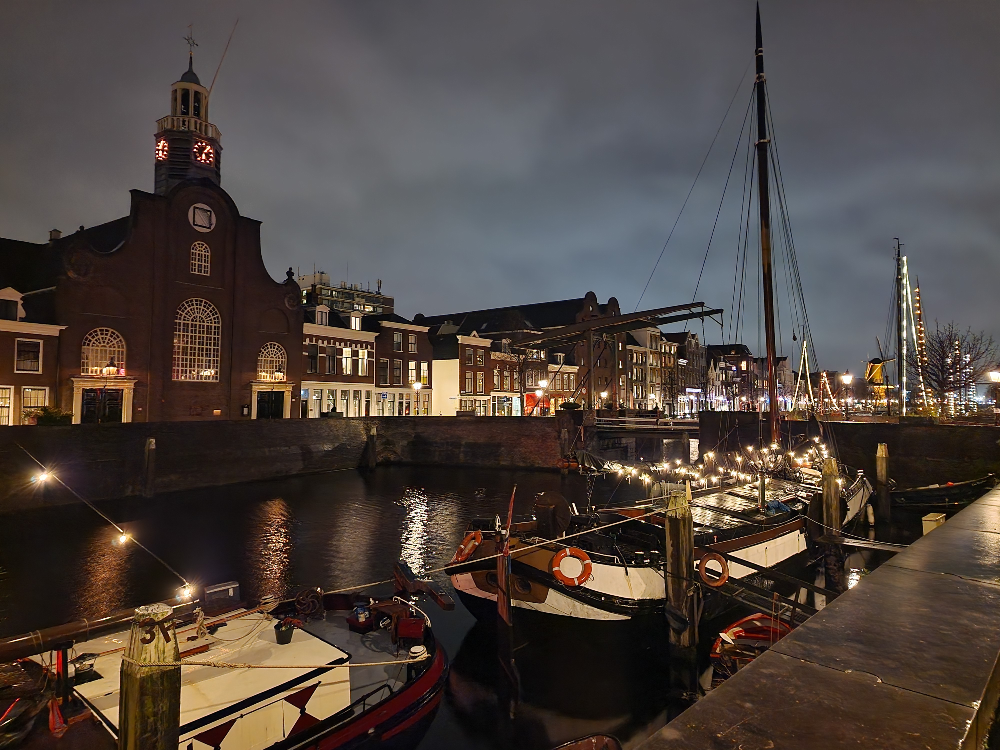

Rotterdam
DE KUIP

Stadion Feijenoord, in de volksmond De Kuip, is een voetbalstadion in Rotterdam-Zuid. De Nederlandse betaaldvoetbalclub Feyenoord speelt zijn thuiswedstrijden in het stadion en ook het Nederlands voetbalelftal speelt er regelmatig. Het stadion werd ontworpen door architect Leendert van der Vlugt, van architectenbureau Brinkman en Van der Vlugt. In 1935 werd er begonnen met de bouw; de opening was op 27 maart 1937. De Kuip is na de Johan Cruijff ArenA het grootste voetbalstadion in Nederland. Tevens is De Kuip het stadion waar het Nederlands voetbalelftal de meeste interlands heeft gespeeld.
Zelf heb ik in een tijdspanne van 2007 t/m 2019 een seizoenkaart gehad van Feyenoord en heb ik De Kuip vele malen betreden. De eerste jaren op vak T. Vanaf 2015 op vak X. Je staat dan midden in de deining die door het gejuich van doelpunten en successen tot stand komt. Er valt niets mee te vergelijken. De Kuip ademt voetbal. De Kuip is voetbal.
HISTORISCH DELFSHAVEN
Deze pittoreske jachthaven is een van de weinige stukjes oude stad die het bombardement op Rotterdam in 1940 doorstaan hebben. Het heeft een markante geschiedenis als de plek vanwaar de Pilgrim Fathers naar Amerika vertrokken én als geboorteplaats van Piet Hein.
Vroeger verdiende men in Delfshaven de kost met de haringvisserij en het distilleren van jenever. Nu vind je in de historische grachtenpandjes gezellige antiek- en snuisterijenwinkels, kunstenaarsateliers, jenevercafé’s, bierbrouwers, no-nonsens-eethuisjes en het Dutch Pinball Museum. Historisch Delfshaven heeft zijn authentieke looks altijd weten te behouden, met de ouderwetse korenmolen De Destilleerketel als belangrijk herkenningspunt.